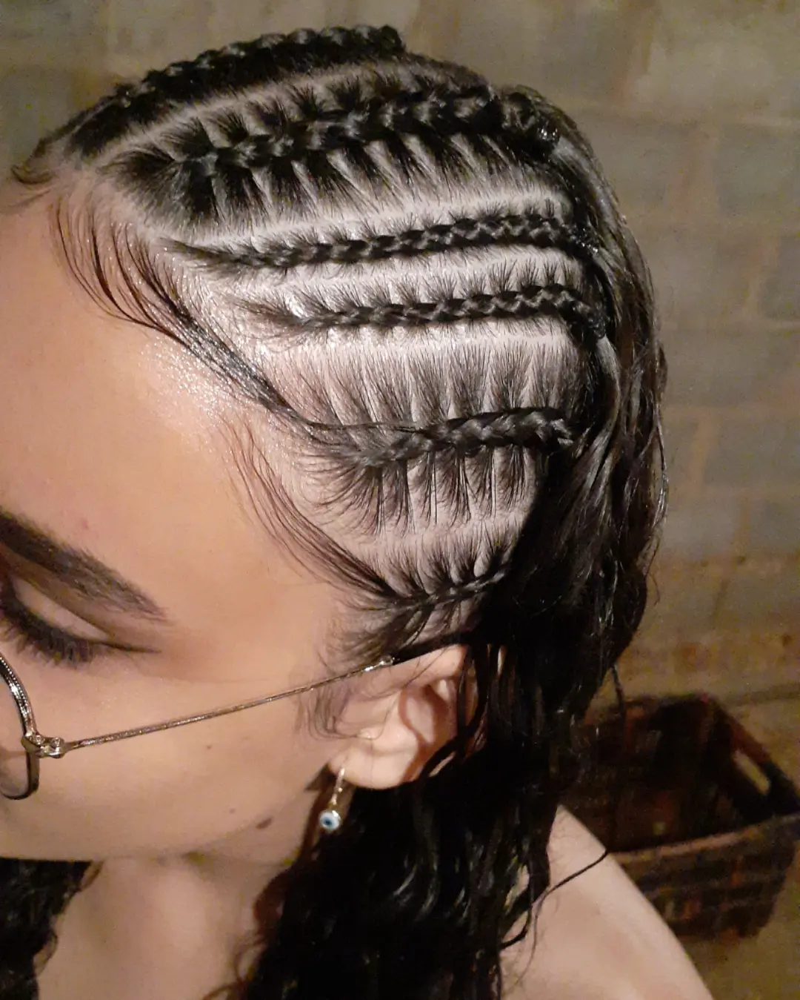
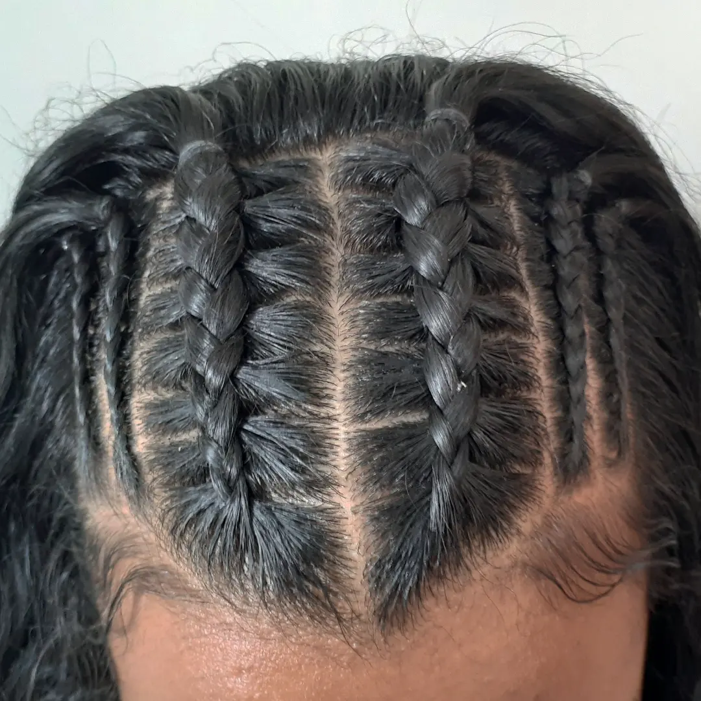
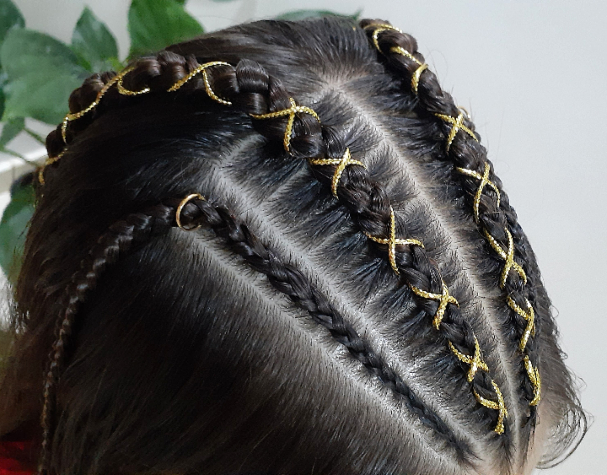
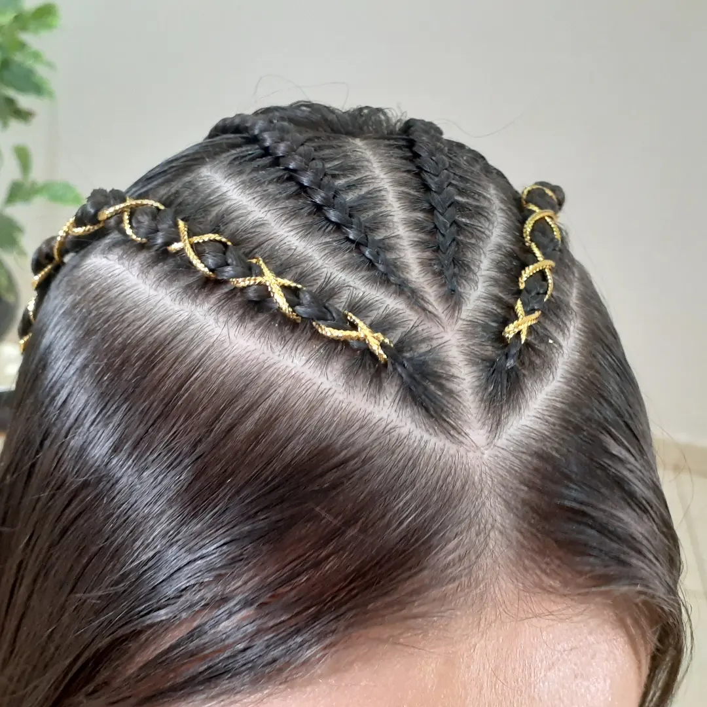
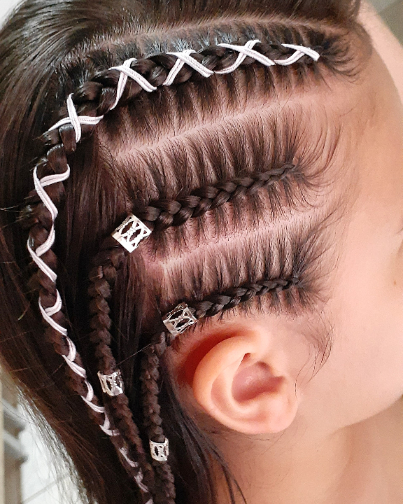
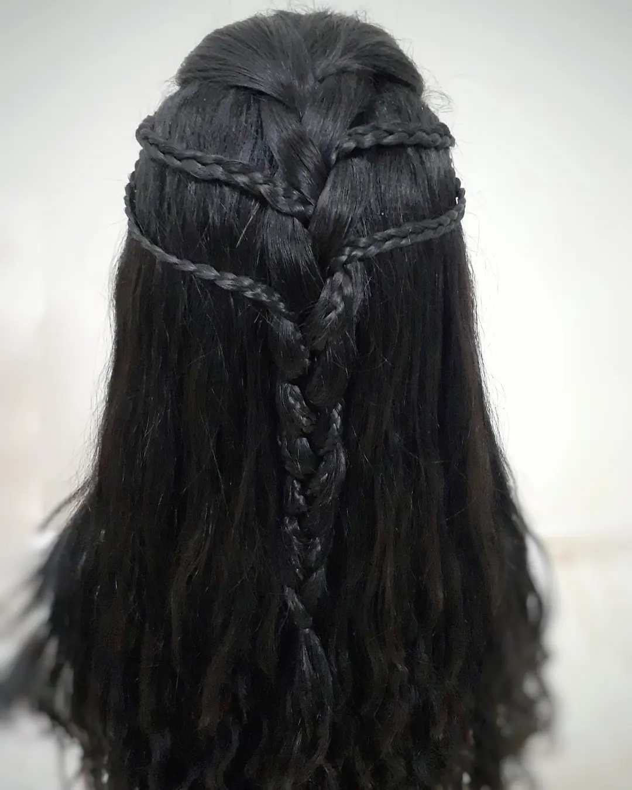
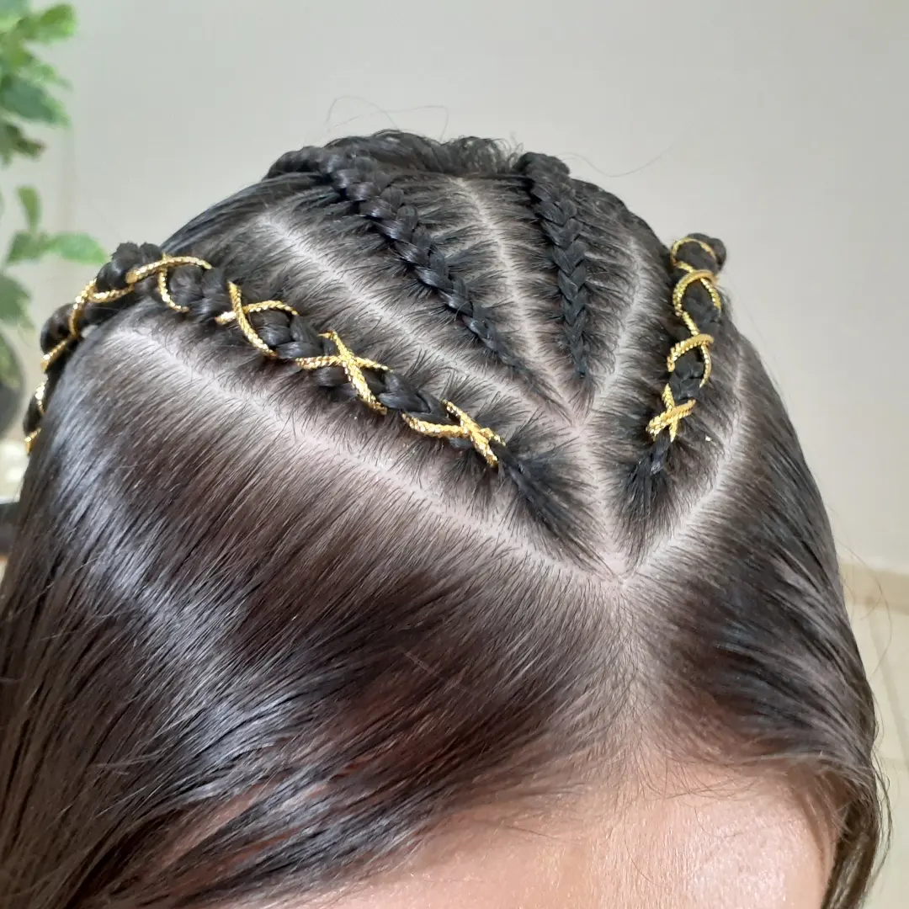
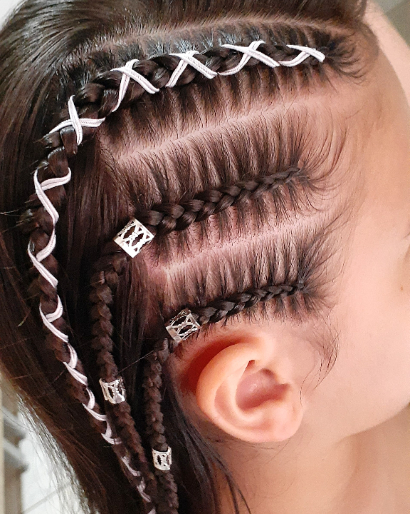
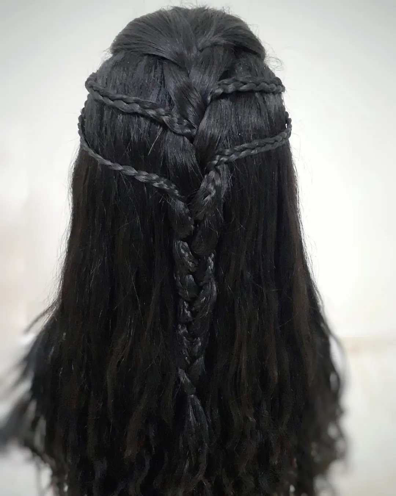

Após o inicio do trafico de escravos vindo da África, várias denominações foram dadas pelos europeu para identificar suas etnias, tais como: Jeje, Fulas, Angolas e Nagô. Nagô era o termo usado para designar os negos vindos da cista e que falavam Iorubá.
A trança nagô é caracterizada por ser feita bem próxima e justa ao couro cabeludo, podendo se estenter por todo o cumprimento do cabelo. Nesse estilo é bastante comum serem feitas tranças mais finas, utilizando fios coloridos para decorar, argolas, pingentes e desenhos e abusando da criatividade.
Confira abaixo, algumas tranças feitas por mim, criadora da página:
 
 




